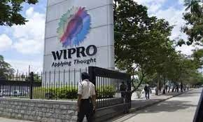

click here
| BCA JOBS INFO | |||
|  | |||
|
For More Info: click here |
BCA Jobs are one of the popular and most abundant jobs you can find in India as well as abroad. The average salary of a BCA graduate is around INR 3-6 LPA in India.With almost every sector, whether government or private, using computer applications and software, there is a need for BCA graduates for various jobs. The various job roles offered to BCA graduates include Data Scientist,Systems Admin,Network Engineer,Project Assistant,Computer Programmer,Software Developer. You can find BCA jobs in both government and private sectors, and even in top companies like Google, Microsoft, HCL, TCS. Apart from private companies, government organizations like Banks, BPOs, EPFO, NIOS offer BCA jobs in India for which a salary of INR 15,000 to 30,000 is offered per month.Some government jobs can even pay you a higher salary of INR 60,000-80,000 lakhs in India. | ||
Created By Aishwarya kenjale |
|||